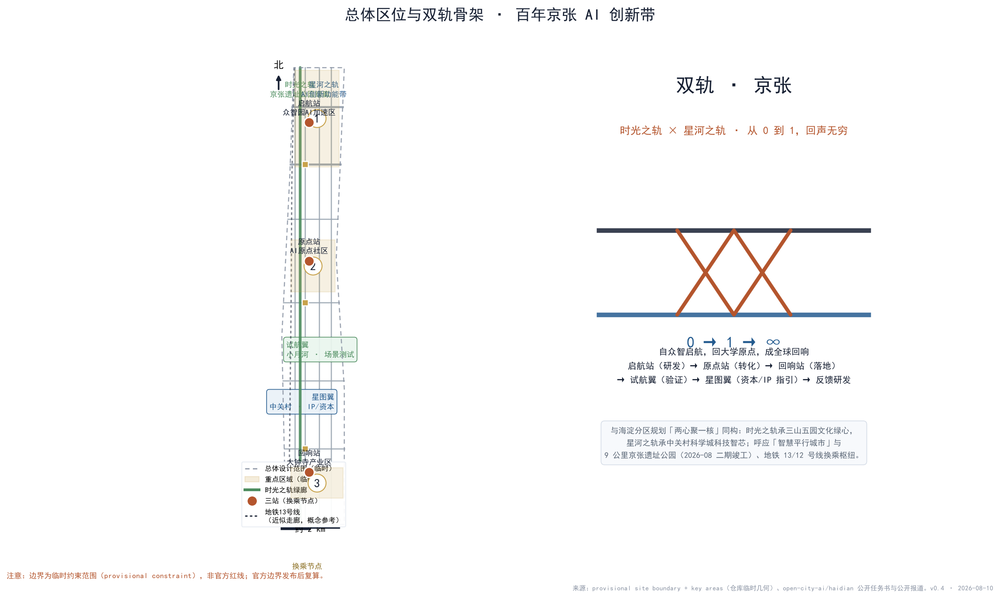
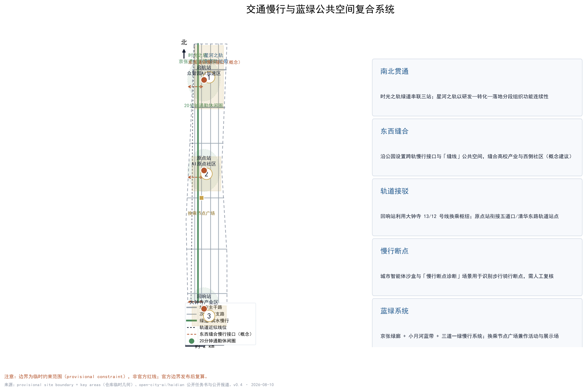

双轨 · 京张——百年京张AI创新带总体城市设计
时光之轨 × 星河之轨 · 启航—原点—回响 · 从 0 到 1，回声无穷
formal · professional_design_package
中英双语 · v0.4
⚠ provisional constraint
11,412,825 m2
总体设计范围（临时复算）
17.0%
绿地率
3.2%
公共空间率
22.8%
道路率
19.5%
建筑基底密度
3
重点区数量
总览地图：总体区位与双轨骨架

时光之轨沿9公里京张遗址公园绿廊展开，星河之轨组织AI创新功能带；三站两翼与换乘节点构成协同回路。
三层范围工作框架
| 范围 | 面积 |
|---|---|
| 统筹研究范围 | 43.6 km2（公告） |
| 总体设计范围 | 11.4 km2（公告）/ 11,412,825 m2（临时复算） |
| 重点区域范围 | 3.68 km2（公告） |
三大重点区域（临时范围）
| 名称 | 定位 | 复算面积 | 公告约面积 |
|---|---|---|---|
| 启航站 · 众智园AI自主创新加速区 | AI全栈自主创新体系与AI治理话语权 | 1,929,202 m2 | 192.1 ha（公告） |
| 原点站 · 北京AI原点社区 | 世界级AI创新生态 | 1,043,237 m2 | 104.3 ha（公告） |
| 回响站 · 大钟寺AI产业集聚区 | 智能原生新业态 | 720,454 m2 | 72.0 ha（公告） |
用地分区与双轨走廊

建筑与更新项目
概念建筑基底约2,228,190 m2（密度约19.5%）；更新项目按绿廊激活、站城一体、社区织补、数字叠加四类组织，拆改留仅作概念分类。
交通慢行与蓝绿公共空间

AI 场景卡（14张）
开源发布厅
城市智能体沙盒（测试）
具身智能试炼场（测试）
慢行断点诊断（测试）
人才生活管家
AI安全治理廊
校企转化客厅
数据要素剧场
低碳算力驿站
京张记忆线路
开发者散步道
荣誉信号·贡献荣誉墙
钟声·信号亭
全球AI双轨节路线
五类用户画像
开发者与研究者高校师生创业团队与企业本地居民与通勤者全球访客
测试类场景（沙盒/试炼场/断点诊断）须设置人工复核、安全边界与隐私评估；未成熟技术不写成可全面部署。
分期实施计划
一期 · 近期启航站·众智园与时光之轨北段：示范研发与绿廊公共生活
二期 · 中期原点站·AI原点社区与中段绿廊：源头创新与转化服务
三期 · 远期回响站·大钟寺与南段：智能原生业态与枢纽商业
本地自检状态
- PASSBOUNDARY_TRUST — Provisional boundary is present and labeled; replace with official redline before professional scoring.
- PASSKEY_AREAS_TRUST — Three required key areas are provisional; replace with official polygons before professional scoring.
- PASSLAND_USE_TOPOLOGY — Land-use partition covers the submitted boundary without gaps or overlaps (verified by spatial_review).
- PASSMETRICS_REPRODUCIBLE — All known metrics are recomputed from geometry in EPSG:4548; statutory controls stay unknown with reasons.
- PASSBILINGUAL_PACKAGE — Bilingual counterparts exist and are declared in manifest.json.
- PASSVISUAL_STATIC — Static offline HTML visualization matches metrics.json via data-metric markers.
- PASSPROFESSIONAL_EVIDENCE — Proposal references standards, design depth items, geometry, metrics, sources, and assumptions.
核心指标复算与证据链

任务覆盖
公告任务与智能体任务覆盖： 17 / 6（agent.1–6）
- ['1.3/1.4/1.5 公告任务全部覆盖（compliance_matrix.json）', 'agent.1 总体概念与功能统筹：命名、Logo、三区两翼协同回路', 'agent.2 生态案例与全栈自主体系：8个全球案例与生态图谱', 'agent.3 AI+场景：14张场景卡、3个测试场景、5类画像', 'agent.4 公共空间与朝圣地标：4个概念地标与组件库', 'agent.5 文化叙事：从汽笛到信号四幕叙事', 'agent.6 全球活动体系：京张双轨节与长期运营']
来源登记（节选）
- SITE-PACKAGE（官方公开）Project brief, enums, allowed design space, ranges, and schemas.
- SOURCE-REGISTRY（仓库公开登记）Public/cleared/provisional source usability registry; distinguishes formal-ready, background-only, provisional-only, and needs-review materials.
- PROCESSED-FACT-PACK（仓库加工参考）Agent-readable navigation layer for scopes, required tasks, source-use boundaries, and missing-data checklist; not a new authority source.
- BOUNDARY-SOURCE（由公开资料推断）Submitted site boundary geometry source (provisional).
- KEY-AREA-SOURCE（由公开资料推断）Three required detailed-design key area boundaries (provisional).
- OFFICIAL-ANNOUNCEMENT（官方公开）Official announcement tasks, scope levels, key areas, language, and deliverable context.
- AGENT-TASKBOOK（用户提供已清权）Agent-facing open-call principles, six required agent tasks, scenario/branding/operation requirements, and boundary clause.
- SRC-BEIJING-MASTER-PLAN（官方公开）Background: 北京城市总体规划（2016—2035）空间结构、减量集约、腾笼换鸟、留白增绿。
- SRC-HAIDIAN-DISTRICT-PLAN（官方公开）Background: 海淀分区规划（2017—2035）两心聚一核、智慧平行城市、2035年建设用地227平方公里。
- SRC-JZ-PARK-PHASE2-2026（官方公开）Background: 京张铁路遗址公园二期竣工开放，9公里绿廊、约53公顷、70个社区约45万居民，“百年京张，焕活绿廊”“三道一绿”。
- SRC-ZGC-WORLD-LEADING（官方公开）Background: 中关村世界领先科技园区建设方案，“科技创新出发地、原始创新策源地、自主创新主阵地”三地定位。
- SRC-METRO-12-DAZHONGSI（官方公开）Background: 地铁12号线2024年12月开通，大钟寺站为13/12号线换乘枢纽。
- SRC-QINGHUAYUAN-STATION（官方公开）Background: 清华园车站1910年建、詹天佑题匾、1949年进京赶考历史。
- SRC-BELL-DAZHONGSI（官方公开）Background: 大钟寺本名觉生寺、永乐大钟（高6.75米、重约46.5吨）公开资料。
- SRC-HAIDIAN-AI-INDUSTRY（官方公开）Background: 海淀AI原点社区、AI北纬社区、具身智能产业园等公开报道。
假设与待补数据
- A-CONTROLS-001 控规容积率、建筑高度、建筑密度、绿地率、退线等法定控制条件未随公开资料包提供，须由官方附件或专业团队确认。
- A-BOUNDARY-001 总体设计范围使用仓库临时约束几何（provisional constraint，official_boundary=false），按公告约11.4平方公里校核。
- A-KEYAREA-001 三个重点区使用临时粗略多边形，按公告约192.1/104.3/72.0公顷校核。
- A-BUILDING-001 建筑基底为概念布局示意（按用地分区生成），不代表现状建筑、权属或审定建筑规模。
- A-RAIL-001 地铁13号线近似走廊线位为公开信息的概念示意，不代表轨道线位方案。
- A-DATA-001 海淀分区规划、京张遗址公园二期、中关村三地定位等背景信息来自公开报道，仅作概念呼应。
注意：本面板全部空间图层使用临时约束范围（provisional constraint，official_boundary=false），不得作为官方红线、审批依据或精确面积依据；官方 SITE_BOUNDARY/KEY_AREA 多边形发布后须全量复算。本方案为AI开放共创建议，不构成法定规划结论。
生成方式：由 OpenAI Codex（GPT-5 系）生成，agent_id=johnjialinxuan-byte；数据来源与限制见 sources.json；版权见 copyright_statement.md。v0.4 · 2026-08-10